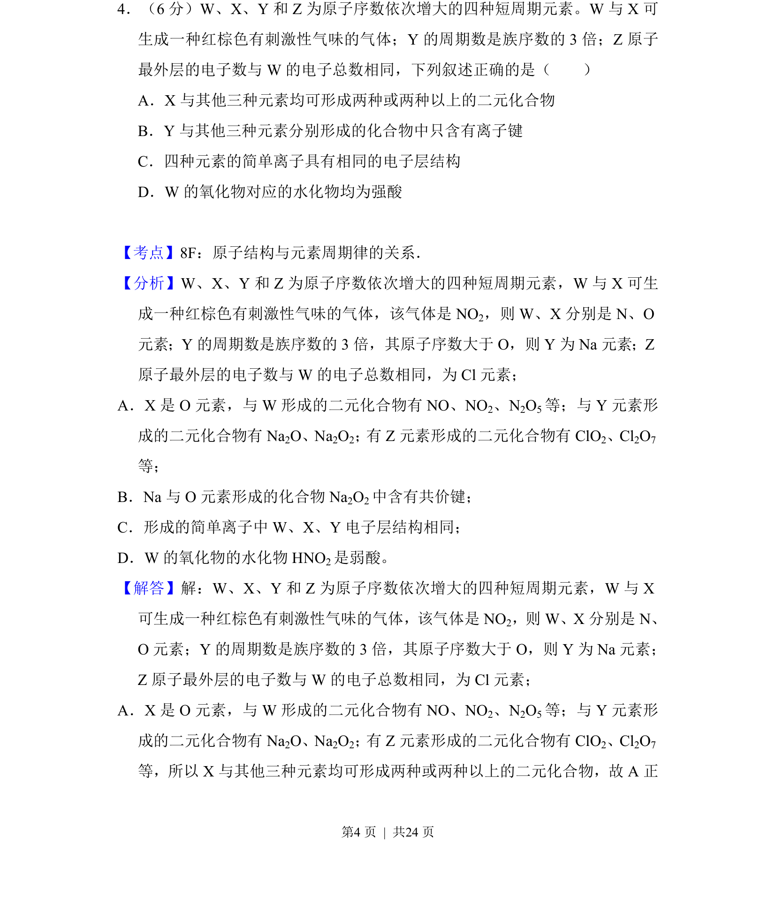
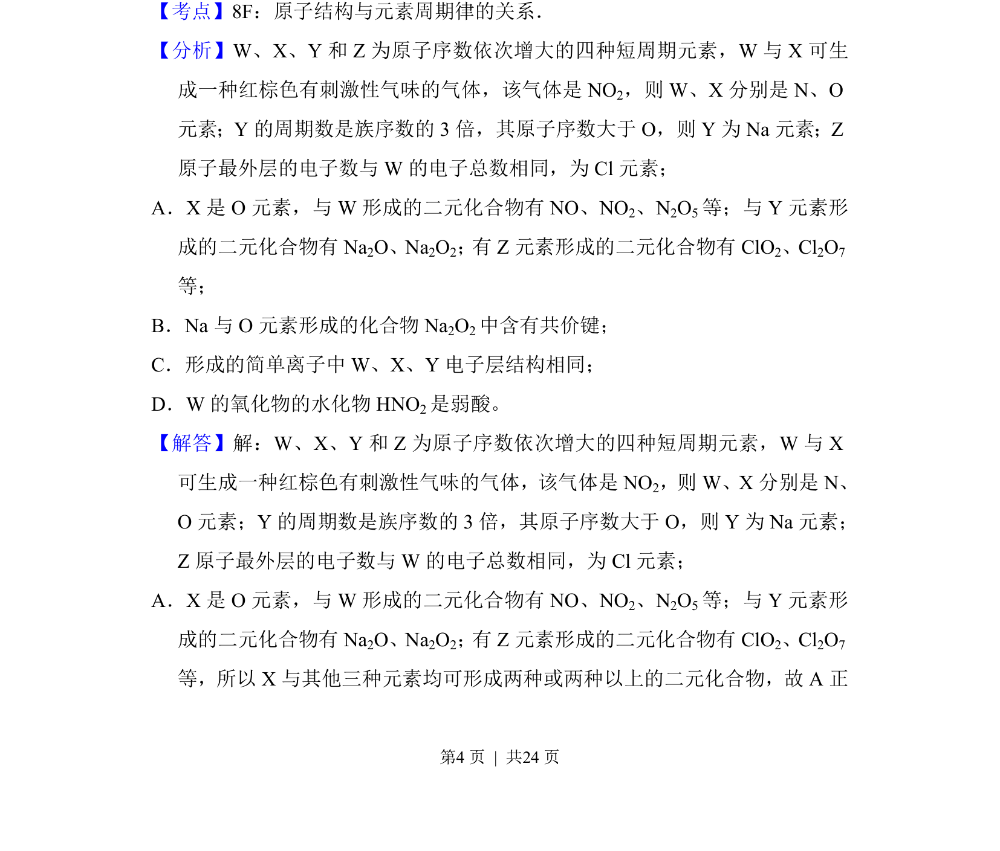
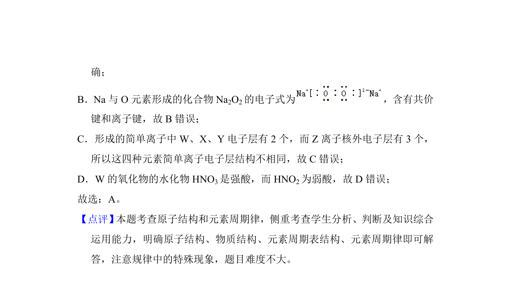

考点：原子结构 元素周期律 离子键 二元化合物
原子结构
元素周期律
离子键
二元化合物

W、X、Y、Z短周期元素推断及化合物性质判断


📄 原 PDF 第 4 页：素材/真题/吉林/2008-2024·（吉林）化学高考真题/2018年高考化学试卷（新课标Ⅱ）（解析卷）.pdf
素材/真题/吉林/2008-2024·（吉林）化学高考真题/2018年高考化学试卷（新课标Ⅱ）（解析卷）.pdf